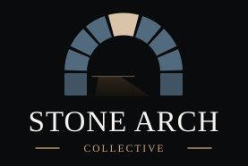

Media Kit & Brand Guidelines¶
Welcome to the Stone Arch Collective Media Kit. This resource provides PR professionals, marketing firms, and partners with the official brand assets and usage guidelines needed to represent our organization consistently and professionally.
1. Brand Narrative¶
The Stone Arch Collective mark represents permanence, stability, and trust. Inspired by Roman arches that have stood for millennia, our brand symbol reflects a collective architecture: individual elements working together to create an unbreakable structure, with artificial intelligence at the summit as the load-bearing keystone.
For the complete story behind our visual identity, see About the Logo.
2. Logo Assets & Sizing¶
We provide two primary versions of our logo: a light-mode version optimized for light backgrounds, and a dark-mode version optimized for dark/black backgrounds.
Logo Variations¶
| Variant | Purpose & Compatibility | Preview | Asset Link |
|---|---|---|---|
| Light Mode Logo | Standard placement. Best for white, cream, or light grey backgrounds. | logo.svg | |
| Dark Mode Logo | Dark mode placement. Best for dark grey, deep navy, or pure black backgrounds. |  |
logo-dark.svg |
{kind=link}
{kind=link}
Transparent Backgrounds
By default, both SVG files contain a background canvas rectangle. For transparent versions (useful for overlaying on complex layouts or images), edit the SVG files and remove or hide the <rect id="background" ... /> element.
3. Logo Placement & Background Rules¶
To maintain high contrast and brand integrity, choose the correct logo variant based on the background color of your document or interface.
Light Background Placement (Use Light Logo)¶
Use logo.svg on backgrounds ranging from pure white to light cream (HEX #FFF to #E0E0E0).
* Do: Keep the surrounding space clean.
* Don't: Place this version on dark backgrounds, as the dark navy title text and stones will lose contrast and legibility.
Dark Background Placement (Use Dark Logo)¶
Use logo-dark.svg on backgrounds ranging from dark grey to pure black (HEX #252525 to #000000).
* Do: Use this version for presentations with dark themes, midnight headers, or print media with dark-colored paper.
* Don't: Place this version on light backgrounds, as the cream title text and slate stones will wash out.
4. Official Brand Colors¶
Our primary color palette is derived directly from the stone arch composition. Use these exact color specifications across digital and print media:
Primary Brand Palette¶
| Color | Swatch | HEX | RGB | CMYK | Purpose |
|---|---|---|---|---|---|
| Stone Navy | #34454f |
52, 69, 79 |
34, 13, 0, 69 |
Primary arch stones (Light mode) | |
| Slate Blue | #516a7d |
81, 106, 125 |
35, 15, 0, 51 |
Primary arch stones (Dark mode) | |
| Keystone Tan | #c9b393 |
201, 179, 147 |
0, 11, 27, 21 |
Keystone (central top block) | |
| Collective Gold | #c19a76 |
193, 154, 118 |
0, 20, 39, 24 |
Wordmark accent rules | |
| Foundation Navy | #2b3a44 |
43, 58, 68 |
37, 15, 0, 73 |
Springline foundation piers | |
| Title Navy | #202e39 |
32, 46, 57 |
44, 19, 0, 78 |
Wordmark text (Light mode) | |
| Title Cream | #f5f3f0 |
245, 243, 240 |
0, 1, 2, 4 |
Wordmark text (Dark mode) |
5. Clear Space & Size Restrictions¶
To ensure visual clarity, keep the logo free from crowding by following these layout guidelines:
- Clear Space: Maintain a minimum clear space of 20px or the width of the keystone (whichever is larger) on all sides of the logo block. Do not allow text, page edges, or other graphics to intrude into this zone.
- Minimum Digital Size: The logo should not be displayed smaller than 120px in width on web pages or digital presentations to preserve the legibility of the "COLLECTIVE" subtitle text.
- Minimum Print Size: The logo should not be printed smaller than 1.25 inches (approx. 32mm) in width.
6. Brand Typography¶
The Stone Arch Collective wordmark utilizes elegant, timeless serif typefaces that evoke stability and history.
- Primary Serif Font: Trajan Pro or Cinzel (preferred for headlines and logo context).
- Fallback System Serif: Georgia or Times New Roman.
- Body Text Font: Standard sans-serif typography (e.g., Roboto, Inter, or standard system sans-serif) for clean readability.
7. Contact & Approvals¶
For co-branding designs, editorial features, custom lockups, or questions regarding logo usage, please contact:
- Brand Manager: Dan McCreary
- Email / Contact: Dan McCreary LinkedIn | GitHub Profile
Licensing Notice
The Stone Arch Collective name, logo, and brand assets are not released under open-source licenses. Always secure approval before publishing or distributing co-branded materials.